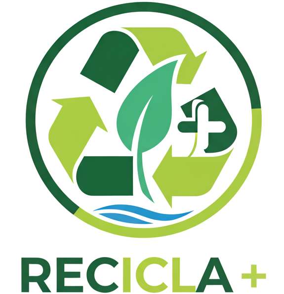
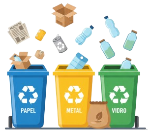

O que somos?
No Brasil e no mundo, muitos desafios ambientais estão ligados ao descarte incorreto de resíduos e à falta de acesso ao saneamento básico. Esses problemas não apenas afetam o meio ambiente, mas também a saúde pública e a qualidade de vida das comunidades.
O Recicla+ é uma págna web voltada à conscientização ambiental, incentivando práticas sustentáveis e o engajamento coletivo para construirmos um futuro mais limpo e justo. Nossa missão é conectar pessoas, tecnologia e informação para transformar hábitos diários em ações impactantes, promovendo a educação ambiental desde a base da sociedade. Junte-se a nós e faça a diferença na sua comunidade local!

Reciclagem Responsável
A reciclagem é um dos pilares da economia circular, reduzindo o impacto ambiental e gerando emprego e renda para milhares de famílias. De acordo com dados oficiais do Sistema Nacional de Informações sobre Saneamento (SNIS), a taxa de reciclagem no Brasil ainda é baixa, cerca de 3% dos resíduos sólidos urbanos, embora o potencial de reaproveitamento chegue a 70%.
Essa defasagem representa perda econômica e aumento da poluição de solos e rios devido ao acúmulo em aterros sanitários. A separação correta dos resíduos pode mudar esse cenário, impulsionando a economia circular.
Iniciativas como cooperativas de catadores e programas de logística reversa têm crescido, promovendo inclusão social e geração de empregos. Ao reciclar, preservamos recursos naturais, economizamos energia e reduzimos as emissões de gases de efeito estufa.

Coleta Seletiva
Separar corretamente os resíduos na fonte (residência, comércio e indústria) é o primeiro passo para aumentar a recuperação de materiais. Papel, plástico, vidro e metal devem ser encaminhados aos pontos de coleta seletiva ou aos coletores municipais. Essa prática simples evita a contaminação cruzada e maximiza o valor dos recicláveis.
- Separe em lixeiras diferentes: Adote, no mínimo, duas lixeiras em casa, uma exclusivamente para materiais recicláveis e outra para resíduos orgânicos e rejeitos.
- Limpe as embalagens recicláveis: Lave e seque potes, latas e garrafas antes de descartá-los para evitar mau cheiro e facilitar o processo de reciclagem.
- Incentive conhecidos: Compartilhe dicas em grupos locais.

Guia Prático: O que pode e o que não pode?
Tire suas dúvidas na hora de separar o lixo. A separação correta é fundamental para o sucesso da reciclagem!
Papel
- Jornais e revistas
- Caixas de papelão
- Folhas de caderno
- Embalagens de papel
- Guardanapos sujos
- Papel higiênico
- Fotografias
- Fitas adesivas
Plástico
- Garrafas PET
- Embalagens de limpeza
- Potes de alimentos
- Sacolas plásticas
- Tomadas e cabos
- Embalagens metalizadas
- Adesivos
- Esponjas
Vidro
- Garrafas de bebidas
- Potes de conserva
- Frascos de perfume
- Copos
- Espelhos
- Lâmpadas
- Louças e cerâmicas
- Vidro temperado
Metal
- Latinhas de alumínio
- Latas de aço
- Tampas de metal
- Clipes e grampos
- Esponjas de aço
- Pilhas e baterias
- Latas de tinta
- Eletrônicos
Conexão com os ODS da ONU
O Recicla+ está alinhado aos Objetivos de Desenvolvimento Sustentável (ODS) da ONU, em especial o ODS 12, mas também contribui para o ODS 11 (Cidades e Comunidades Sustentáveis) ao promover urbanismo ecológico. Esses objetivos, adotados em 2015, guiam ações globais até 2030 para erradicar a pobreza e proteger o planeta. No contexto brasileiro, o Plano de Ação Nacional para os ODS integra essas metas às políticas públicas, com foco em inclusão social e preservação ambiental.

- ODS 12: Consumo e produção responsáveis — reduzir desperdício global de alimentos pela metade e promover reciclagem, com metas para minimizar resíduos perigosos.
Educação ambiental, logística reversa e políticas públicas integradas são caminhos práticos para contribuir com essas metas.
Todos os ODS